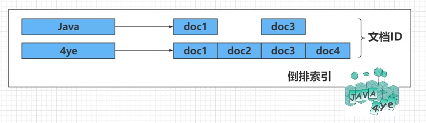

日志系统
LogCenter 日志服务平台是针对日志类数据的一站式服务. 包含如下功能:
- 日志收集：能够采集多种来源（客户端、服务端、云）的日志数据
- 传输和过滤：能够稳定的把日志数据解析过滤并传输到存储系统 (能够流入 Kafka、ELK、Redis 等多种下游存储)
- 存储：存储日志数据
- 分析：支持 UI 检索和分析
- 警告：能够提供错误报告，监控机制
企业级 LogCenter 的建设，通常都是ELK技术栈 + 自研运维平台的结合, 因此我们先来认识下 ES.
前置知识 Lucene
通过对生活中数据的类型作了一个简短了解之后，我们知道关系型数据库的 SQL 检索是处理不了这种非结构化数据的。
这种非结构化数据的处理需要依赖全文搜索，而目前市场上开放源代码的最好全文检索引擎工具包就属于 Apache 的 Lucene 了。
但是 Lucene 只是一个工具包，它不是一个完整的全文检索引擎。Lucene 的目的是为软件开发人员提供一个简单易用的工具包，以方便的在目标系统中实现全文检索的功能，或者是以此为基础建立起完整的全文检索引擎。
目前以 Lucene 为基础建立的开源可用全文搜索引擎主要是 Solr 和 Elasticsearch。
Solr 和 Elasticsearch 都是比较成熟的全文搜索引擎，能完成的功能和性能也基本一样。
但是 ES 本身就具有分布式的特性和易安装使用的特点，而 Solr 的分布式需要借助第三方来实现，例如通过使用 ZooKeeper 来达到分布式协调管理。
不管是 Solr 还是 Elasticsearch 底层都是依赖于 Lucene，而 Lucene 能实现全文搜索主要是因为它实现了倒排索引的查询结构。
如何理解倒排索引呢？ 假如现有三份数据文档，文档的内容如下分别是：
- Java is the best programming language.
- PHP is the best programming language.
- Javascript is the best programming language.
为了创建倒排索引，我们通过分词器将每个文档的内容域拆分成单独的词（我们称它为词条或 Term），创建一个包含所有不重复词条的排序列表，然后列出每个词条出现在哪个文档。
结果如下所示：
这种结构由文档中所有不重复词的列表构成，对于其中每个词都有一个文档列表与之关联。
这种由属性值来确定记录的位置的结构就是倒排索引。带有倒排索引的文件我们称为倒排文件。
我们将上面的内容转换为图的形式来说明倒排索引的结构信息，如下图所示：
其中主要有如下几个核心术语需要理解：
-
词条（Term）： 索引里面最小的存储和查询单元，对于英文来说是一个单词，对于中文来说一般指分词后的一个词。
-
词典（Term Dictionary）： 或字典，是词条 Term 的集合。搜索引擎的通常索引单位是单词，单词词典是由文档集合中出现过的所有单词构成的字符串集合，单词词典内每条索引项记载单词本身的一些信息以及指向“倒排列表”的指针。
-
倒排表（Post list）： 一个文档通常由多个词组成，倒排表记录的是某个词在哪些文档里出现过以及出现的位置。每条记录称为一个倒排项（Posting）。倒排表记录的不单是文档编号，还存储了词频等信息。
-
倒排文件（Inverted File）： 所有单词的倒排列表往往顺序地存储在磁盘的某个文件里，这个文件被称之为倒排文件，倒排文件是存储倒排索引的物理文件。
从上图我们可以了解到倒排索引主要由两个部分组成：
- 词典
- 倒排文件
词典和倒排表是 Lucene 中很重要的两种数据结构，是实现快速检索的重要基石。词典和倒排文件是分两部分存储的，词典在内存中而倒排文件存储在磁盘上。
ElasticSearch 的基础概念
每个 Index 由一个或者多个 shard 组成，分布在不同的 node ，document 由 Field 组成，存储在这些 shard 中。
ES vs 关系型数据库
和传统的关系型数据库有这么一种关系
- 接下来讲解下 ElasticSearch 中 7 个基本概念
1 索引 Index
有 3 层含义
- 名词
Index (Indices，Indexes) 是文档的集合，类似传统的关系型数据库。
是分片的集合，每个分片相当于 Lucene 中的索引。
- 动词
索引一个文档，就是存储一个文档到一个索引中以便被检索
- 一种数据结构
这里指：倒排索引 ，就是通过 value ——> Key ，如下 👇 通过记录这个词和它所在的文档 ID，对应 Lucene 中的 segments (分段)

2 类型 Type
- ES 8.x 版本开始, 文档的 Type 都是
_doc, 不是支持修改
3 文档 Document
ElasticSearch 是面向文档的，文档是数据存储和索引的最小单位，是字段的集合 ，在 ElasticSearch 中以序列化 JSON 结构存储，文档结构如下 👇，下划线开头的是官方提供的字段，称为 元数据
{
"_index" : "java4ye",
"_type" : "_doc",
"_id" : "1001",
"_score" : 1.0,
"_source" : {
"user" : {
"id" : "123456789",
"name" : "4ye",
"age" : 2,
"desc" : "nice to meet you 2!"
}
}
}
这个文档主要看 _source 字段，里面就是我们上传的文档数据
4 字段 Field
是文档中的基本单位，以键值对的形式存在，如 上面的 "_id" : "1001"
可以在官网中查看，有这么一些元字段 🐖

5 映射 Mapping
3 个解释:
- 用于表示这个字段的数据类型，如 字符串，整数，浮点数，日期等，不指定时会自动创建
- 用来定义一个文档以及其所包含的字段如何被存储和索引，例如在 mapping 中定义字段的名称和类型，以及所使用的分词器。
- Mapping 就是对索引库中索引的字段名称及其数据类型进行定义，类似于 mysql 中的表结构信息。不过 es 的 mapping 比数据库灵活很多，它可以动态识别字段。一般不需要指定 mapping, 因为 es 会自动根据数据格式识别它的类型，如果你需要对某些字段添加特殊属性（如：定义使用其它分词器、是否分词、是否存储等），就必须手动添加 mapping。
6 节点 node
ElasticSearch 是以集群的方式运行的，每个 ElasticSearch 实例就是一个节点。（每个 ES 进程就是一个节点)
而节点有很多种角色 👇，好复杂 🙃
当你没有配置这个 node.roles ，这个节点默认有下面这些角色

6.1 主节点 MasterNode
负责集群节点状态的维护，索引的创建，删除，数据的 rebalance，分片的分配等工作，不负责具体数据的索引和检索
6.2 数据节点 DataNode
负责集群中数据的写入和检索，属于 IO，内存 和 CPU 密集型操作，需要的计算资源大
6.3 提取节点 IngestNode
数据预处理通道，在数据被索引前预先处理文档。
6.4 协调节点 CoordinatingNode
接受客户端请求，然后转发到数据节点，最后将各个节点返回来的数据进行整合。对应着两个阶段
- 分散阶段，协调节点将请求转发到保存数据的数据节点
- 收集阶段，协调节点将每个数据节点的结果缩减为单个全局结果集
集群内任何一个节点都可以作为协调节点
7 分片 Shard 和 副本 Replica
Elasticsearch 的 索引是以分片的方式来组织的.
分片分为 主分片 和 副本分片，默认配置是 每个索引 5 个主分片，每个主分片都有一个副本分片，主分片和它的副本不在一个节点上，主要作用是 故障转移和负载均衡
文档怎么路由到对应的分片上呢？ 公式如下 👇
shard = hash(routing) % number_of_primary_shards
routing 是一个可变值，默认是文档的 _id ，也可以设置成一个自定义的值。routing 通过 hash 函数生成一个数字，然后这个数字再除以 number_of_primary_shards （主分片的数量）后得到 余数 。这个分布在 0 到 number_of_primary_shards-1 之间的余数，就是我们所寻求的文档所在分片的位置。
这就解释了为什么我们要在创建索引的时候就确定好主分片的数量 并且永远不会改变这个数量：因为如果数量变化了，那么所有之前路由的值都会无效，文档也再也找不到了。
8 ES 字段类型
text 用于索引全文值的字段，例如电子邮件正文或产品说明。这些字段是被分词的，它们通过分词器传递 ，以在被索引之前将字符串转换为单个术语的列表。
分析过程允许 Elasticsearch 搜索单个单词中每个完整的文本字段。文本字段不用于排序，很少用于聚合。
Keyword 用于索引结构化内容的字段，例如电子邮件地址，主机名，状态代码，邮政编码或标签。它们通常用于过滤，排序，和聚合。Keyword 字段只能按其确切值进行搜索。
通过对字段类型的了解我们知道有些字段需要明确定义的，例如某个字段是 Text 类型还是 Keyword 类型差别是很大的，时间字段也许我们需要指定它的时间格式，还有一些字段我们需要指定特定的分词器等等。
如果采用动态映射是不能精确做到这些的，自动识别常常会与我们期望的有些差异。
所以创建索引的时候一个完整的格式应该是指定分片和副本数以及 Mapping 的定义，如下：
PUT my_index
{
"settings" : {
"number_of_shards" : 5,
"number_of_replicas" : 1
}
"mappings": {
"_doc": {
"properties": {
"title": { "type": "text" },
"name": { "type": "text" },
"age": { "type": "integer" },
"created": {
"type": "date",
"format": "strict_date_optional_time||epoch_millis"
}
}
}
}
}
8.1 官方说明
Each field has a field data type, or field type. This type indicates the kind of data the field contains, such as strings or boolean values, and its intended use. For example, you can index strings to both text and keyword fields. However, text field values are analyzed for full-text search while keyword strings are left as-is for filtering and sorting.
Field types are grouped by family. Types in the same family have exactly the same search behavior but may have different space usage or performance characteristics.
8.2 常见的 field type 说明
| 类型 | 说明 |
|---|---|
| Numbers | 例如 int、long、float，若需要范围查询或需要做数字聚合如平均值、百分位等，则需要设置为数字类型 |
| keyword | 字符串(不分词) ，字段搜索功能弱很多，无法使用词素进行搜索，但是可以完成聚合操作，同时不分词字段受到最大长度 32K 的限制 |
| text | 字符串(分词)，可以直接搜索该字段被分词后的词素(Term)，也可以使用通配符搜索等功能，但是无法利用该字段完成聚合等操作 |
| ip | 会对该 ip 地址进行 geoip 解析，获取地理位置以及运营商信息 |
| json | 会对该字段的文本内容进行 json 解析，以 kv 形式呈现解析结果，安全起见，原始字段内容也将保留 |
| date | 如果需要使用日志的时间作为时间戳 ，您需要指定一个字段为 date 类型，作为日志的时间字段，然后你需要时间解析规则。时间格式参考：plugins-filters-date，时间戳格式比较重要，后台自动匹配到的不一定是正确的，需要再次确认。（若没有时间字段，则可以使用系统时间） |
9 @timestamp（时间戳）
当日志被某个事件触发，时间戳作为日志事件的一部分表明事件是何时发生的。在 ELK 中时间戳的作用非常重要，我们使用时间戳来过滤搜索结果，同时也使用时间戳确定您项目下的哪些日志超出保存期限需要清除。 获取时间戳取决于您发送的日志数据类型，时间戳将按以下顺序优先处理：
- 分析日志数据：如果您的日志内时间戳能够被解析，ELK 将直接使用日志中的时间戳，它是由您的应用程序记录下来的。
- syslog：如果您的日志由 syslog 转发，那么会有时间戳被嵌入日志头部，ELK 会提取使用。
- doc 里若没有时间字段，则可以使用 ES 系统时间.
日志接入 ES 时详细过程
日志接入 ES 时, 须设置日志解析规则
目前提供了两种切割日志的方式
-
- 划词提取（速度快，但要求日志格式统一）
-
- 正则解析
划词提取
划词提取是指通过特定分隔符号或者特定字符串（每条日志中都会出现的相同内容）来提取日志中关键信息的解析方法。
正则解析
正则解析则是通过 GROK 正则解析, 来提取日志中的关键字.
彻底搞懂分词
什么是分词?
- 分词是指将文本转换成一系列单词（term or token）的过程，也可以叫做文本分析，在 es 里面称为 Analysis. (这里的 term 等于 token, 产生 token 即产生 term）
- 搜索引擎的核心是倒排索引，而倒排索引的基础就是分词。所谓分词可以简单理解为将一个完整的句子切割为一个个单词的过程。在 es 中单词对应英文为 term。
我们简单看个例子
ES 的倒排索引即是根据分词后的单词创建，即 我、爱、北京、天安门这 4 个单词。这也意味着你在搜索的时候也只能搜索这 4 个单词才能命中该文档.
分词整个过程
如下图所示

- 在日志切割阶段, 如果你指定了某个字符串为
keyword类型, 那这个字段就是 Term, 将来可用于搜索.
| 阶段 | 阶段英文名 | 作用 | 举例 |
|---|---|---|---|
| 前 | Character Filter | 对原始文本进行处理 | 例：去除 html 标签、特殊字符等 |
| 中 | Tokenizer | 将原始文本进行分词 | 例：上课学习–>上课,学习 |
| 后 | Token Filters | 分词后的关键字进行加工 | 例：转小写、删除语气词、近义词和同义词等 |
1 ES 有哪些 Character Filter
- 在进行 Tokenizer 之前对原始文本进行处理，如增加、删除或替换字符等
| 名称 | 作用 |
|---|---|
| HTML Strip | 去除 html 标签和转换 html 实体 |
| Mapping | 字符串替换操作 |
| Pattern Replace | 正则匹配替换 |
2 ES 有哪些 Tokenizer
- 通常是对哪些类型为
text的filed进行分词
| 分词器（Analyzer） | 特点 |
|---|---|
| Standard（es 默认） | 支持多语言，按词切分并做小写处理 |
| Simple | 按照非字母切分，小写处理 |
| Whitespace | 按照空格来切分 |
| Stop | 去除语气助词，如 the、an、的、这等 |
| Keyword | 不分词 |
| Pattern | 正则分词，默认\w+,即非字词符号做分割符 |
| Language | 常见语言的分词器（30+） |
- 所谓的分词器就是指 Tokenizer 阶段使用的分词器
3 ES 有哪些 Token Filter
- 对输出的单词（term）进行增加、删除、修改等操作
| 名称 | 作用 |
|---|---|
| Lowercase | 将所有 term 转换为小写 |
| stop | 删除 stop words |
| NGram | 和 Edge NGram 连词分割 |
| Synonym | 添加近义词的 term |
4 原始的 API 里如何分别指定Character Filter Tokenizer Token Filter
POST _analyze
{
"char_filter": ["html_strip"], ---> 指定Character Filter
"tokenizer": "standard", ---> 指定Tokenizer
"filter": ["lowercase"], ---> 指定Token Filter
"text":"Hello WORLD"
}
其他问题
1 如何指定使用什么分词器
写时分词器需要在 mapping 中指定，而且一经指定就不能再修改，若要修改必须新建索引。如下所示我们新建一个名为 ms_english 的字段，指定其分词器为 english：
PUT test/_mapping/doc
{
"properties": {
"msg_english":{
"type":"text",
"analyzer": "english"
}
}
}
- 其中 test 为索引名称
- 使用"analyzer"指定分词器名称
2 ES 默认的分词器是啥
- 默认是 standard
3 如果 doc 里某个 filed 不需要分词怎么做
- 把该 field 的 type 设置为 keyword